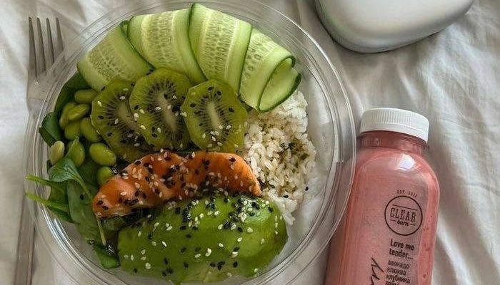
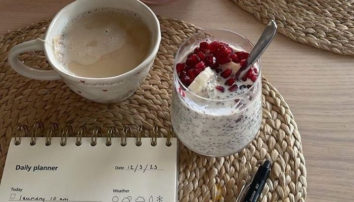

Los mejores tips de alimentacion
10 tips para una alimentación saludable
1. Come variedad de alimentos Asegúrate amplia gama de alimentos, como frutas, verduras, cereales integrales, proteínas magras (pollo, pescado, tofu) y grasas saludables (aguacate, frutos secos, aceite de oliva). Esto te garantiza que tu cuerpo reciba todos los nutrientes esenciales.
2. Hidrátate bien El agua es clave para el buen funcionamiento del cuerpo. Intenta beber al menos 8 vasos de agua al día, y más si realizas actividad física intensa o v de incluir en tu dieta unaives en un clima cálido.
3. Controla las porciones Aunque los alimentos sean saludables, comer en exceso puede contribuir al aumento de peso. Presta atención a las porciones y escucha las señales de hambre y saciedad de tu cuerpo.

4. Come porciones adecuadas Prestar atención a las porciones ayuda a mantener un equilibrio calórico. Comer en exceso, incluso alimentos saludables, puede ser perjudicial.
5. Evita las dietas muy restrictivas Las dietas extremadamente bajas en calorías o de eliminación pueden ser insostenibles a largo plazo y afectar la salud. Es mejor adoptar un enfoque equilibrado y sostenible.
6. Ingiere fibra suficiente La fibra es esencial para la digestión y la salud intestinal. Consúmela a través de frutas, verduras, legumbres y cereales integrales.

7. Prioriza las grasas saludables Elige grasas saludables como las del aceite de oliva, aguacate, frutos secos y pescado. Estas grasas son importantes para la salud cardiovascular y el funcionamiento del cerebro.
8. Planifica tus comidas Planificar tus comidas con anticipación te ayuda a evitar tomar decisiones impulsivas. Además, te permite incluir una variedad de alimentos en tu dieta.
9. Controla el consumo de sal Reducir la sal ayuda a mantener una presión arterial saludable y prevenir enfermedades cardiovasculares. Cocina con hierbas y especias para agregar sabor sin exceso de sodio.
10. Escucha a tu cuerpo Aprende a reconocer las señales de hambre y saciedad. Comer conscientemente te ayudará a disfrutar de la comida y evitar el exceso.